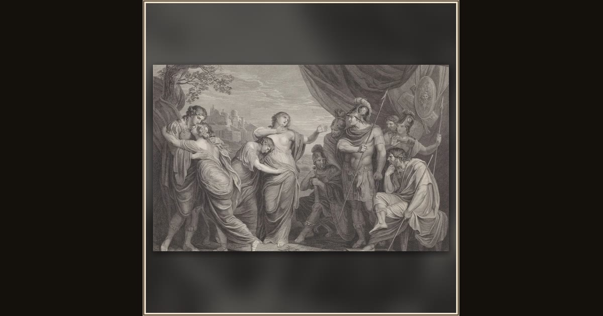

Eteocles en Polynices, door hun moeder Jocaste tot vrede vermaand
Pieter Franciscus Martenasie, after painting by Andries Lens · 1774 · rijksmuseum
Jocasta extends her arms toward Eteocles and Polynices, seeking peace between them. Eteocles arrives at the conference where she hopes to reconcile her sons (446). Explore its place in Euripides's Plays, Phoenissae, line 450.